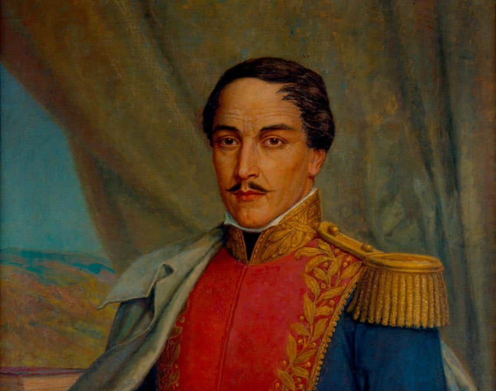

Ocaña es más que una ciudad; es un viaje en el tiempo. Con su impresionante legado colonial, monumentos históricos y un papel protagónico en la historia de Colombia, este destino cautiva a quienes buscan conocer el pasado a través de sus calles, plazas e iglesias. Descubre los rincones que hicieron de Ocaña un punto clave en la historia nacional.
Pero su importancia no solo radica en su pasado colonial. En 1828, esta ciudad fue sede de la histórica Convención de Ocaña, un evento crucial donde se debatió el futuro de la Gran Colombia y que terminó dividiendo las posturas entre centralistas y federalistas. Caminar por sus calles es revivir esos momentos de cambio y transformación que definieron el rumbo del país.
